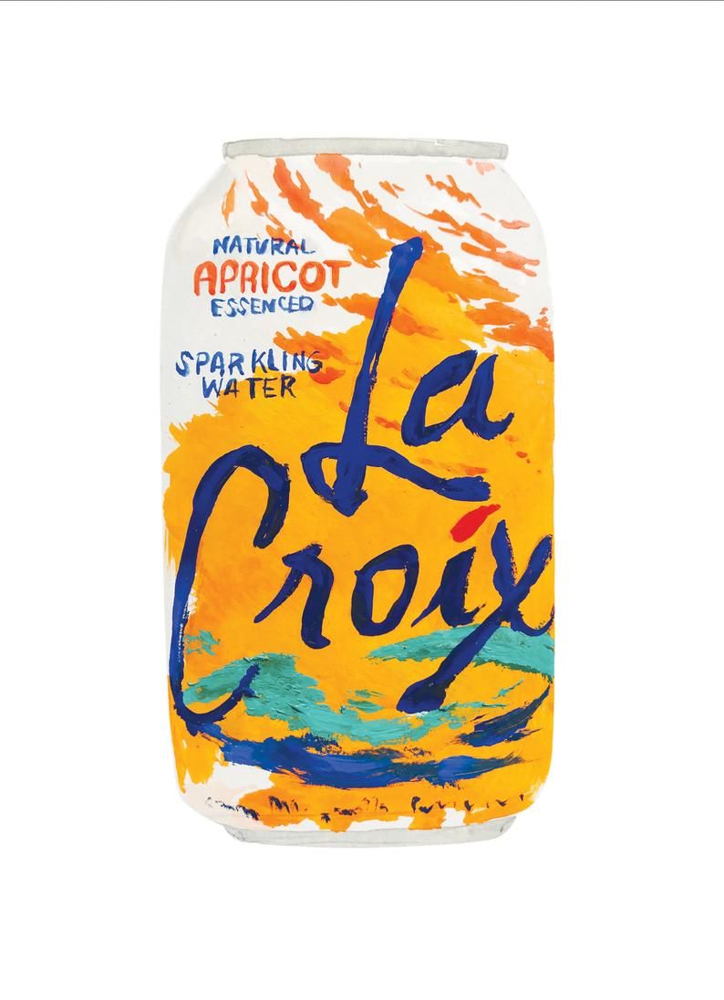

La croix has been hit with the misperception that it is watered down, carbonated juice. But alas, it is not. La croix indeed is a work of art. It is like air is flowing through the fresh water and from 10 miles away, a fruit is squeezed, therefore giving that spark of carbonation an ~essence~ of flavor. And, luckily for the world, La Croix has blessed us with 21 beautiful flavors.
But what are the best flavors? Oh what a challenge to decide! Not. The NUMBER ONE flavor of la croix is Pamplemousse. Pamplemousse la croix, aka grapefruit, is the most wonderous la croix flavor. It bursts with the hint of sour grapefruit that one craves with a hint of sugar. The SECOND BEST is Hi-Biscus. The flavor literally is greeting you, and indeed it does, with its flowery taste with the backbone of tea vibes, which makes it perfect to drink while spilling the tea. The third best flavor is apricot, which is smooth through and through. It has the sleekness that the top two flavors contradict, but after the smooth tropical taste, a sligh tingle is what is left in your mouth. Magic.